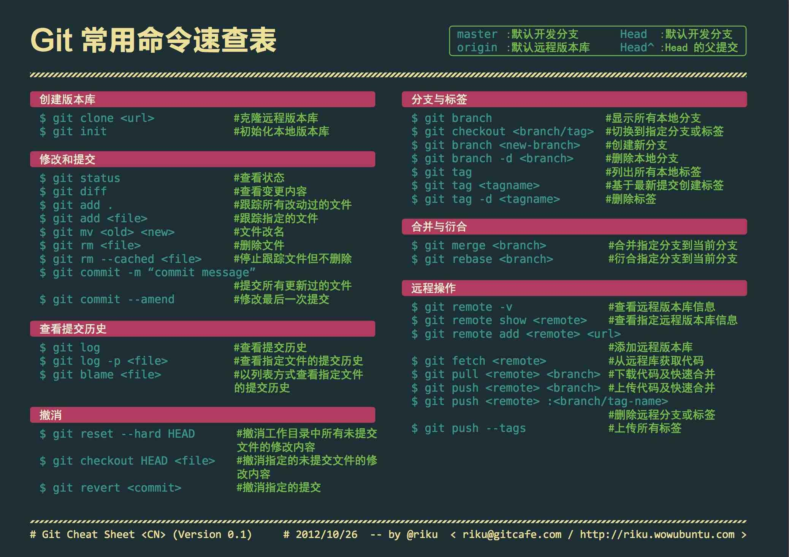

Git & Github 使用¶
- mkdir 新建文件夹
- git init 初始化
- git status 查看当前文件状态
- git add （git add . to add all）（to stage files）把工作区的修改添加到暂存区
- git status
- git commit 把修改提交到本地仓库
- git commit -m 进行commit时附加一条说明
- git commit -a -m 全部commit 且添加一条说明
- git diff（if unstaged）工作区与暂存区进行比较
Working with Branches：
- git branch _branchName （create branch）新建分支
- git checkout _branchName （switch to branch）切换分支
- git checkout master （switch to inmaster）
- git checkout -b _branchName （create and switch to branch）新建并切换到分支
- git branch（view all branches）查看当前本地的分支，且当前分支会用“*”标记
- git branch -r 查看远程仓库分支列表
- git branch -d _branchName 删除分支
- git branch -vv 查看本地分支对应的远程分区
- git branch -m oldName newName 给分支重命名
Note MAKE SURE to switch to the branch before making changes
- git merge _branchName 当前分支和指定分支合并
- esc+wq 退出VIM编辑器
- git branch —merged
- git branch —no-merge
- git -d（to delete branch）_branchName 删除分支
- git -D（force deletion）_branchName 强制删除分支
一个来自w3c的cheatsheet 